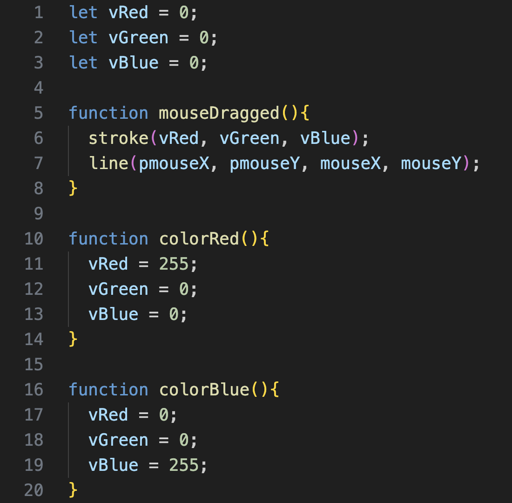
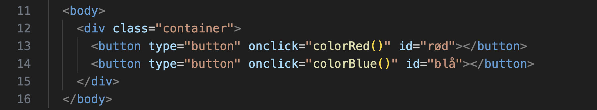

hvad er billedmanipulation?
Billedmanipulation indebærer at ændre eller redigere et billede ved f.eks. at justere farverne, forbedre kvaliteten eller tilføje visuelle effekter.
hvad er JavaScript?
JavaScript er et sprog, der bruges til at gøre websider interaktive.
Ved brug af JavaScript kan man dermed bl.a. håndtere brugerinput og manipulere HTML og CSS.
eksempel
Ovenover ses et eksempel på JavaScript, der medvirker til billedmanipulation.
Forklaringer til hver linje ses nedenunder.
- 1 - definerer variablen vRed og sætter den til 0
- 2 - definerer variablen vGreen og sætter den til 0
- 3 - definerer variablen vBlue og sætter den til 0
- 5 - den indbyggede funktion MouseDragged findes frem
- 6 - vælger RGB-farven for tegnede elementer
- 7 - tegner en linje fra musens position til musens position
- 10 - skaber en funktion kaldet colorRed
- 11 - vRed sættes til 255
- 12 - vGreen sættes til 0
- 13 - vBlue sættes til 0
- 16 - skaber en funktion kaldet colorBlue
- 17 - vRed sættes til 0
- 18 - vGreen sættes til 0
- 19 - vBlue sættes til 255
Med andre ord skabes tre variable, der bestemmer de RGB-værdier, som der skal tegnes med. Dernæst bestemmes det, at når musen klikkes og bevæges, så skal der tegnes en linje under musen med en farve bestemt af variablene for RGB-værdierne. Derudover skabes også to funktioner, der hverisær bestemmer RGB-farven til at være rød eller blå.
Ovenover ses et eksempel på HTML, der medvirker til billedmanipulation.
Forklaringer til hver linje ses nedenunder.
- 13 - skaber en knap, som kalder funktionen colorRed, når den klikkes
- 14 - skaber en knap, som kalder funktionen colorBlue, når den klikkes
Med andre ord kaldes funktionerne, der ændre RGB-værdierne til den linje, der tegnes med, ved at klikke på knapperne. Derved kan man både vælge en rød og blå farve at tegne med.
pixelPaint
Vores program 'pixelPaint' skal demonstrere, hvordan man kan manipulere billeder på pixel-niveau.
Programmet opnår dette ved at gøre det muligt at tegne på et billede med forskellige farver. Programmet indeholder også en clear- og en save-knap, således man både kan slette og gemme sine ændringer.
Programmet er designet til at være brugervenligt og nemt at interagere med, således alle kan bruge det. Derudover har vi valgt et minimalistisk design, der minimerer distraktioner fra programmets funktion.
se program